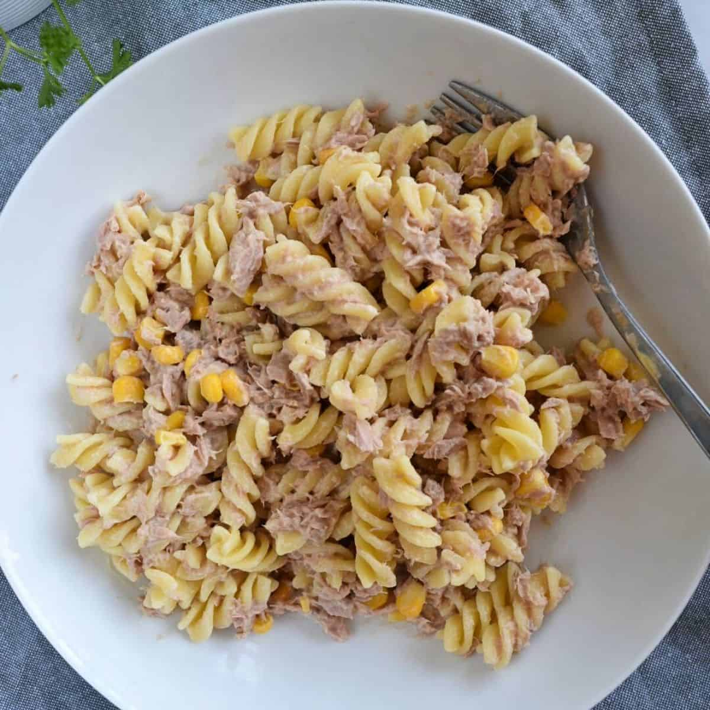

Tuna Mayo Pasta

Description:
Easiest
Dinner
Ever
Ingredients:
- Can of Tuna
- 75g Fusili Pasta (Dry Weight)
- 2 x tbsp Mayonnaise
- Pinch of Salt & Pepper
- Tin of Sweetcorn
Steps:
- Boil water in a pan and add 1 tsp of salt
- Add the past to the pan and cook for as long as the packet insturcts
- Drain the tuna and the sweetcorn, mix with the mayo, salt and pepper
- Drain the cooked pasta and mix altogether
- Munch!
Back to Homepage